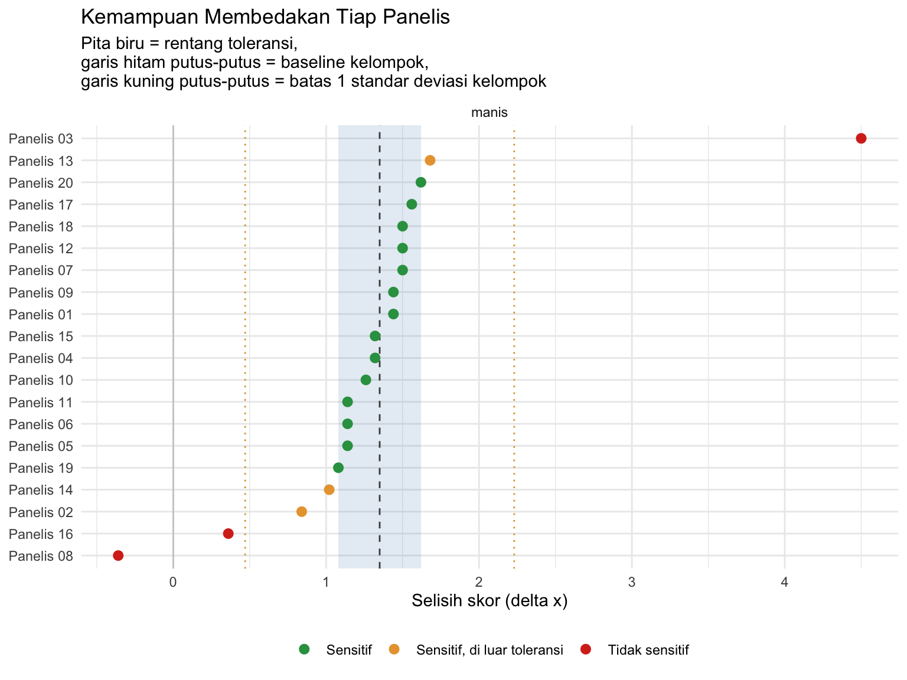
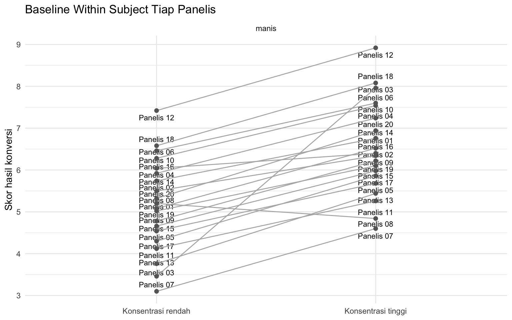

library(ggplot2)
library(dplyr)
library(tidyr)
library(readxl)2 Penentuan Baseline dan Variabilitas Panelis
Mengukur kemampuan membedakan dan keseragaman kelompok panelis
2.1 Tujuan Pembelajaran
Setelah sesi ini, mahasiswa akan mampu:
| Mengetahui | Memahami | Melakukan |
|---|---|---|
| Arti baseline sebagai tingkat dasar respon sensoris tiap panelis | Perbedaan baseline within subject dan between subject | Mengonversi skala tidak terstruktur menjadi skor numerik |
| Rumus konversi skala tidak terstruktur | Mengapa selisih \(\Delta x\) lebih informatif daripada skor mentah | Menghitung \(\Delta x\), \(\overline{\Delta x}\), dan simpangan baku kelompok |
| Arti variabilitas dan rentang SD 5–20% | Mengapa panel dengan SD besar disebut heterogen | Menentukan batas atas dan batas bawah baseline |
| Kategori panelis sensitif dan tidak sensitif | Bahwa sensitivitas berbeda tidak selalu berarti kemampuan berbeda | Mengelompokkan panelis dan membaca sebarannya pada grafik |
2.2 Sekilas tentang Baseline
Dalam evaluasi sensoris, setiap orang punya tingkat dasar respon yang berbeda. Ada panelis yang cenderung memakai bagian bawah skala, ada yang selalu memakai bagian atas, meskipun sampel yang dinilai sama. Tingkat dasar inilah yang disebut baseline.
Karena itu, yang kita nilai bukan skor mentah panelis, melainkan selisih skor antara dua sampel:
- Baseline within subject memperhatikan bagaimana satu panelis merespon dua produk. Panelis 1 boleh menilai kedua produk lebih rendah daripada Panelis 2.
- Baseline between subject membandingkan antar panelis. Jika selisih antara produk A dan B pada Panelis 1 sama dengan selisih pada Panelis 2, keduanya dianggap punya kemampuan yang sama walaupun sensitivitasnya berbeda.
Variabilitas adalah derajat penyebaran selisih tersebut di dalam kelompok. Simpangan baku (SD) yang kecil berarti panel seragam, SD yang besar berarti panel heterogen.
Data yang akan kita gunakan berasal dari uji paired comparison dengan rating test terhadap 20 panelis pada salah satu atribut manis atau asin:
| Atribut | Sampel konsentrasi rendah | Sampel konsentrasi tinggi |
|---|---|---|
manis |
Larutan gula 4% | Larutan gula 4,3% |
asin |
Larutan garam 1% | Larutan garam 1,25% |
Setiap panelis memberi tanda (×) pada skala tidak terstruktur panjang 15 cm, lalu jarak tanda dari ujung kiri diukur dengan penggaris.
Struktur datanya mengikuti adalah satu baris untuk satu panelis × atribut.
| Kolom | Arti |
|---|---|
panelis |
Nama atau kode panelis |
atribut |
manis atau asin |
x_rendah |
Hasil ukur (cm) untuk sampel konsentrasi rendah |
x_tinggi |
Hasil ukur (cm) untuk sampel konsentrasi tinggi |
Data tersimpan pada file acara3_baseline.xlsx, lembar Data. Jika Anda ingin menginput data kelompok Anda sendiri, gunakan template_input_acara3.xlsx, isi kolomnya, lalu ganti nama file pada perintah read_excel() di bawah.
2.3 Memuat Data
bl <- as.data.frame(read_excel("assets/data/acara3_baseline.xlsx",
sheet = "Sheet1"))
bl$panelis <- as.factor(bl$panelis)
bl$atribut <- as.factor(bl$atribut)
str(bl)'data.frame': 20 obs. of 4 variables:
$ panelis : Factor w/ 20 levels "Panelis 01","Panelis 02",..: 1 2 3 4 5 6 7 8 9 10 ...
$ atribut : Factor w/ 1 level "manis": 1 1 1 1 1 1 1 1 1 1 ...
$ x_rendah: num 6.8 7.5 4.1 8.2 5.9 9.1 3.5 7 6.3 8.8 ...
$ x_tinggi: num 9.2 8.9 11.6 10.4 7.8 11 6 6.4 8.7 10.9 ...head(bl)Think-aloud: “Sebelum menghitung apa pun, saya menggunakan
range(c(bl$x_rendah, bl$x_tinggi))untuk memastikan tidak ada hasil ukur di luar 0–15 cm. Angka di luar rentang itu hampir selalu salah baca penggaris atau salah ketik, bukan temuan.”
table(bl$atribut)
manis
20 range(c(bl$x_rendah, bl$x_tinggi))[1] 3.5 13.22.4 Konversi Skala Tidak Terstruktur
Hasil ukur dalam cm belum bisa langsung dipakai, karena panjang skala pada borang bisa berbeda antar acara. Nilainya dikonversi ke skor pada rentang skala yang disepakati:
\[ x = x_{\min} + \left[ \frac{x_{\text{terukur}}}{x_{\text{total}}} \times (x_{\max} - x_{\min}) \right] \]
dengan \(x_{\text{terukur}}\) = panjang garis dari ujung kiri (cm), dan \(x_{\text{total}}\) = panjang skala pada borang (cm).
panjang_skala <- 15 # panjang garis pada borang (cm)
skala_min <- 1 # nilai skala terkecil
skala_max <- 10 # nilai skala terbesar
konversi <- function(x_terukur) {
skala_min + (x_terukur / panjang_skala) * (skala_max - skala_min)
}
bl$skor_rendah <- konversi(bl$x_rendah)
bl$skor_tinggi <- konversi(bl$x_tinggi)
head(round(bl[, c("skor_rendah", "skor_tinggi")], 2))Perhatikan bahwa konversi bersifat linear. Mengalikan dan menggeser semua nilai dengan angka yang sama tidak mengubah urutan panelis, tidak mengubah panelis mana yang paling sensitif, dan tidak mengubah variabilitas relatif. Konversi dilakukan agar angkanya sebanding antar acara praktikum, bukan agar hasil analisisnya berubah.
2.5 Menghitung Selisih \(\Delta x\)
\(\Delta x\) adalah kemampuan membedakan panelis: selisih skor antara sampel konsentrasi tinggi dan sampel konsentrasi rendah.
bl$delta_x <- bl$skor_tinggi - bl$skor_rendah
bl <- bl %>%
group_by(atribut) %>%
mutate(delta_bar = mean(delta_x),
beda_delta = delta_x - delta_bar) %>%
ungroup() %>%
as.data.frame()
bl %>%
transmute(panelis, atribut,
skor_rendah = round(skor_rendah, 2),
skor_tinggi = round(skor_tinggi, 2),
delta_x = round(delta_x, 2),
beda_delta = round(beda_delta, 2)) %>%
arrange(atribut, panelis) %>%
head(10)Kolom beda_delta adalah kolom terakhir pada Tabel 2.4 modul, yaitu selisih \(\Delta x\) tiap panelis terhadap \(\overline{\Delta x}\) kelompok.
Penting: \(\Delta x\) dihitung berarah, bukan dimutlakkan. Kita tahu sampel mana yang konsentrasinya lebih tinggi, jadi panelis yang normal seharusnya memberi \(\Delta x > 0\). Panelis dengan \(\Delta x < 0\) menilai larutan yang lebih encer justru lebih manis, artinya arah penilaiannya terbalik. Kalau selisihnya dimutlakkan lebih dahulu, panelis seperti ini justru akan tampak sangat sensitif, padahal sebaliknya.
2.6 Baseline dan Variabilitas Kelompok
Baseline kelompok dinyatakan sebagai \(\overline{\Delta x} \pm SD\). Variabilitas dinyatakan sebagai SD relatif terhadap \(\overline{\Delta x}\), dalam persen. Angka inilah yang dibandingkan dengan rentang 5–20%.
ringkasan <- bl %>%
group_by(atribut) %>%
summarise(n = n(),
delta_bar = mean(delta_x),
sd = sd(delta_x),
sd_persen = 100 * sd(delta_x) / mean(delta_x),
.groups = "drop") %>%
as.data.frame()
round_kolom <- c("delta_bar", "sd", "sd_persen")
ringkasan[round_kolom] <- round(ringkasan[round_kolom], 2)
ringkasanCara membacanya:
Nilai sd_persen |
Arti |
|---|---|
| 5–20% | Variabilitas baik, kelompok panelis cukup seragam |
| < 5% | Sangat seragam |
| > 20% | Kelompok panelis heterogen |
Mengapa SD dinyatakan dalam persen, bukan dalam satuan skala? SD sebesar 0,5 berarti hal yang sangat berbeda ketika \(\overline{\Delta x}\)-nya 0,8 dibandingkan ketika \(\overline{\Delta x}\)-nya 5. Pada kasus pertama sebaran panelis hampir selebar efek yang diukur, pada kasus kedua sebarannya kecil. Karena itu variabilitas selalu dibaca relatif terhadap besarnya selisih yang berhasil dideteksi panel.
2.7 Batas Atas dan Batas Bawah
Batas atas dan batas bawah menentukan panelis mana yang dianggap sensitif. Aturannya mengikuti modul:
- Jika SD \(\leq\) 20%, batas = \(\overline{\Delta x} \pm SD\)
- Jika SD \(>\) 20%, panel dinyatakan heterogen dan batas dihitung dengan SD paling toleran, yaitu 20% dari \(\overline{\Delta x}\)
ringkasan$heterogen <- ringkasan$sd_persen > 20
# lebar pita toleransi
ringkasan$lebar <- ifelse(ringkasan$heterogen,
0.20 * ringkasan$delta_bar,
ringkasan$sd)
ringkasan$batas_bawah <- ringkasan$delta_bar - ringkasan$lebar
ringkasan$batas_atas <- ringkasan$delta_bar + ringkasan$lebar
# pita SD penuh, dipakai saat panel heterogen
ringkasan$sd_bawah <- ringkasan$delta_bar - ringkasan$sd
ringkasan$sd_atas <- ringkasan$delta_bar + ringkasan$sd
ringkasan[, c("atribut", "delta_bar", "sd", "sd_persen",
"heterogen", "batas_bawah", "batas_atas")]2.7.1 Hinge Question
Sebelum melanjutkan, jawablah: Panelis 7 memberi skor 3,1 pada larutan gula 4% dan 5,2 pada larutan gula 4,3%. Panelis 12 memberi skor 7,4 dan 9,5 pada dua larutan yang sama. Manakah pernyataan yang benar?
- Panelis 12 lebih sensitif karena skornya lebih tinggi
- Panelis 7 lebih sensitif karena memakai bagian bawah skala
- Keduanya punya kemampuan membedakan yang sama, tetapi baseline berbeda
- Panelis 7 harus ditolak karena skornya terlalu rendah
Jawaban: C. Keduanya menghasilkan \(\Delta x\) = 2,1. Yang berbeda hanyalah tingkat dasar penggunaan skala, dan justru inilah alasan analisis dilakukan pada selisih, bukan pada skor mentah. Inilah yang dimaksud baseline between subject pada bagian materi.
2.8 Klasifikasi Panelis
bl <- merge(bl, ringkasan[, c("atribut", "heterogen", "batas_bawah",
"batas_atas", "sd_bawah", "sd_atas")],
by = "atribut")
bl$kategori <- ifelse(
bl$delta_x >= bl$batas_bawah & bl$delta_x <= bl$batas_atas,
"Sensitif",
ifelse(bl$heterogen &
bl$delta_x >= bl$sd_bawah & bl$delta_x <= bl$sd_atas,
"Sensitif, di luar toleransi",
"Tidak sensitif"))
bl$kategori <- factor(bl$kategori,
levels = c("Sensitif",
"Sensitif, di luar toleransi",
"Tidak sensitif"))
table(bl$atribut, bl$kategori)
Sensitif Sensitif, di luar toleransi Tidak sensitif
manis 14 3 3Kategori tengah hanya muncul ketika panel heterogen (SD > 20%), sesuai modul: panelis yang tidak masuk rentang toleransi 20% tetapi masih berada di dalam rentang variabilitas kelompok. Jika SD sudah berada pada rentang baik, hanya ada dua kategori.
# panelis dengan arah penilaian terbalik
bl %>%
filter(delta_x < 0) %>%
transmute(atribut, panelis, delta_x = round(delta_x, 2))2.9 Visualisasi
warna_kategori <- c(
"Sensitif" = "#2E9E4F", # hijau
"Sensitif, di luar toleransi" = "#E8A33D", # kuning keemasan
"Tidak sensitif" = "#D7301F" # merah
)
ggplot(bl, aes(x = delta_x, y = reorder(panelis, delta_x))) +
geom_rect(data = ringkasan, inherit.aes = FALSE,
aes(xmin = batas_bawah, xmax = batas_atas,
ymin = -Inf, ymax = Inf),
fill = "steelblue", alpha = 0.15) +
geom_vline(data = ringkasan, aes(xintercept = delta_bar),
linetype = "dashed", colour = "grey30") +
geom_vline(xintercept = 0, colour = "grey80") +
geom_point(aes(colour = kategori), size = 2.5) +
facet_wrap(~ atribut) +
scale_colour_manual(values = warna_kategori, drop = FALSE) +
labs(title = "Kemampuan Membedakan Tiap Panelis",
subtitle = "Pita biru = rentang toleransi,
garis hitam putus-putus = baseline kelompok,
garis kuning putus-putus = batas 1 standar deviasi kelompok",
x = "Selisih skor (delta x)", y = NULL, colour = NULL) +
theme_minimal() +
theme(legend.position = "bottom") +
geom_vline(data = subset(ringkasan, heterogen),
aes(xintercept = sd_bawah), colour = "#D9A441",
linetype = "dotted") +
geom_vline(data = subset(ringkasan, heterogen),
aes(xintercept = sd_atas), colour = "#D9A441",
linetype = "dotted")
Cara membaca grafik ini:
| Yang Anda lihat | Artinya |
|---|---|
| Titik di dalam pita biru | Panelis sensitif, kemampuannya sejalan dengan kelompok |
| Titik di luar pita | Panelis tidak sensitif untuk atribut tersebut |
| Titik di kiri garis nol | Arah penilaian terbalik, perlu ditinjau |
| Pita biru lebar | Kelompok panelis heterogen |
| Garis putus-putus jauh dari nol | Panel secara keseluruhan berhasil membedakan kedua sampel |
Grafik berikut memisahkan dua hal yang sering tertukar, yaitu baseline dan kemampuan membedakan.
bl_panjang <- bl %>%
select(panelis, atribut, skor_rendah, skor_tinggi) %>%
pivot_longer(cols = c(skor_rendah, skor_tinggi),
names_to = "level", values_to = "skor") %>%
mutate(level = factor(level,
levels = c("skor_rendah", "skor_tinggi"),
labels = c("Konsentrasi rendah",
"Konsentrasi tinggi")))
ggplot(bl_panjang, aes(x = level, y = skor, group = panelis)) +
geom_line(colour = "grey70") +
geom_point(colour = "grey40", size = 1.8) +
facet_wrap(~ atribut) +
labs(title = "Baseline Within Subject Tiap Panelis",
x = NULL, y = "Skor hasil konversi") +
theme_minimal()
Think-aloud: “Saya membaca grafik ini dua kali. Pertama saya lihat tinggi garisnya: itu baseline panelis, ada yang memang selalu menilai rendah. Kedua saya lihat kemiringan garisnya: itu kemampuan membedakan. Garis yang sejajar tapi bertingkat-tingkat berarti panel punya baseline berbeda dengan kemampuan yang sama, dan itu kondisi yang masih bisa diterima. Garis yang saling berpotongan atau menurun berarti panel belum sepakat, dan di situlah pelatihan perlu ditambah.”
2.10 Menyusun Kesimpulan
Kesimpulan seleksi panelis yang baik menjawab tiga pertanyaan berurutan:
- Baseline kelompok \(\rightarrow\) berapa \(\overline{\Delta x}\), dan apakah panel secara keseluruhan mampu membedakan kedua sampel?
- Variabilitas \(\rightarrow\) berapa SD relatifnya, dan apakah kelompok tergolong seragam atau heterogen?
- Klasifikasi \(\rightarrow\) berapa panelis yang sensitif, dan siapa yang perlu pelatihan lanjutan?
Latihan menulis: Susun satu paragraf (4–6 kalimat) yang menjawab ketiga pertanyaan di atas untuk data praktikum kelompok Anda. Sebutkan nilai \(\overline{\Delta x}\) dan SD sebagai pendukung kalimat, bukan sebagai isi utamanya.
2.11 Latihan (You Do)
2.11.1 Latihan: Challenges
Ubah nilai
panjang_skalamenjadi 10 cm lalu jalankan ulang seluruh dokumen. Apakahsd_persenberubah? Apakah daftar panelis sensitif berubah? Jelaskan mengapa demikian.Hitung ulang batas atas dan batas bawah menggunakan simpangan baku populasi (penyebut \(n\), bukan \(n-1\)):
sd_populasi <- function(x) sqrt(sum((x - mean(x))^2) / length(x))
bl %>%
group_by(atribut) %>%
summarise(sd_sampel = sd(delta_x),
sd_populasi = sd_populasi(delta_x))Seberapa besar bedanya pada n = 20? Pada n berapa perbedaan itu mulai tidak penting?
- Uji apakah \(\overline{\Delta x}\) berbeda nyata dari nol dengan uji t satu sampel. Apa arti hasilnya bagi kesimpulan Acara 3?
t.test(subset(bl, atribut == "manis")$delta_x, mu = 0)2.12 Ringkasan
Dalam sesi ini kita telah mempelajari:
- Baseline sebagai tingkat dasar respon sensoris, serta perbedaan within subject dan between subject
- Konversi skala tidak terstruktur ke skor numerik dan mengapa konversinya tidak mengubah kesimpulan
- Perhitungan \(\Delta x\) secara berarah, dan mengapa selisih berarah lebih informatif daripada nilai absolut
- Baseline kelompok \(\overline{\Delta x} \pm SD\) dan variabilitas sebagai SD relatif dalam persen
- Aturan rentang SD 5–20% serta penggunaan SD paling toleran ketika panel heterogen
- Pengelompokan panelis sensitif dan tidak sensitif sebagai dasar seleksi panelis berikutnya
- Bahwa sensitivitas yang berbeda tidak selalu berarti kemampuan yang berbeda